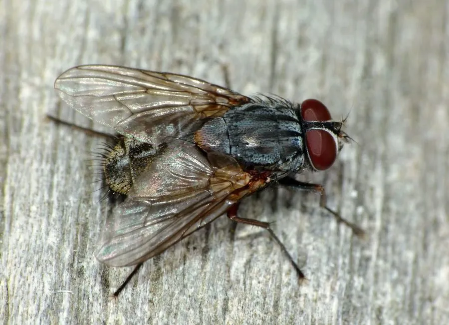

昆虫 · 动物界
厩腐蝇 Muscina stabulans

体形似家蝇而略大的灰黑色蝇类，胸背有淡色纵纹，常在厩舍与垃圾堆繁殖，可机械传播肠道病原。
- 分类
- 门节肢动物门纲昆虫纲目双翅目科蝇科属腐蝇属
- 栖息环境
- 畜舍、禽场、垃圾场、菜市场与居民区周边
- 地理分布
- 世界各地，中国南北各地均有分布
- 保护级别
- 常见卫生害虫，无保护需求
物种志
厩腐蝇的成虫体长约七毫米，比家蝇略大，胸背灰黑色并有四条明显的暗色纵纹，腹部橙黄而带黑色斑块，翅透明，停歇时两翅略微分开。幼虫乳白色，后端钝圆，尾端有一对气门。它喜欢在畜粪、腐菜和垃圾堆中产卵，幼虫在腐殖质里取食发育，老熟后钻入干燥土壤化蛹。
它分布于世界各地，中国南北均有，栖息在畜舍、禽场、垃圾场和居民区周边。成虫善飞行，喜在粪便、食物和伤口附近停留，体表携带大量细菌，可机械传播痢疾、伤寒等肠道传染病，偶尔还会引起人畜的蝇蛆症。它以蛹或幼虫越冬，一年发生多代，繁殖力强。防治以清除孳生物、加盖粪池和使用诱杀装置为主，保持厩舍清洁是最根本的办法。
形态与习性
- 体长约七毫米，比家蝇略大
- 胸部灰黑色，具四条暗色纵纹
- 腹部橙黄带黑色斑块
- 孳生畜粪、腐菜、垃圾堆等腐殖质
- 危害机械传播痢疾、伤寒等肠道病原
- 防治清除孳生物、加盖粪池、诱杀成虫
趣味知识
- 它胸背的四条纵纹是辨认关键，家蝇的胸背没有这么清晰的条纹。
- 它腿上和身上的细毛能粘住成千上万的细菌，落在一块食物上就等于撒了一遍菌。
- 粪池加盖、垃圾及时清运，比喷药更能压住它的数量。